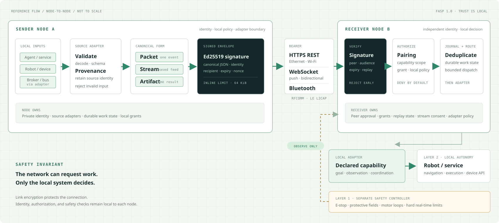

01 / LOCAL
Single host
One process owns identity, state, policy, and the adapters beside its device or agent.
Best for development and edge devicesOPEN SOURCE · APACHE 2.0 · REFERENCE HARNESS
FASP lets independent agents, devices, and robots exchange work and live data through signed messages and local authorization. Every network link leads to the same policy boundary.
Transport changes. The trust path does not.
01 / THE PURPOSE
Two systems can agree on a task, a reservation, or a stream without handing a remote peer direct control of hardware. FASP is the layer that verifies identity and scope, records work, and calls only a declared local adapter.
02 / REFERENCE ARCHITECTURE
Every peer owns its identity and policy. Data is normalized at the source, signed before it leaves, and checked again by the receiving node before any local capability runs.

DEPLOYMENT SHAPES
Start with one node per independently trusted system. Add network infrastructure only when reachability or operations require it.
01 / LOCAL
One process owns identity, state, policy, and the adapters beside its device or agent.
Best for development and edge devices02 / DIRECT
Nodes connect directly over HTTPS, WebSocket, or supported Bluetooth bearers.
Current network model03 / ADAPTED
A local gateway validates constrained device data and signs it with its own FASP identity.
For buses and non-FASP devicesA relay for unreachable peers is a future extension. A container is a packaging choice, not a trust boundary. Read the architecture notes ↗
03 / CANONICAL MODEL
Each source adapter validates its input and enters the same signed envelope path. The receiver applies one set of identity, policy, replay, and resource checks.
One request, event, receipt, or small result. A signed envelope carries identity, expiry, message ID, and a bounded payload.
A finite lease opens a sequence of signed, bounded packets. Choose reliable delivery or the latest sample; the receiver enforces rate and retention limits.
An immutable local result can be stored by digest and referenced from a packet when another authorized node needs to fetch it.
The current harness stores artifacts produced by local adapters; a generic remote blob upload endpoint is not included. See the full communication catalog ↗
04 / CONNECTIVITY
Native bearers carry the signed protocol today. IP networks carry HTTPS or WebSocket. Other ecosystems reach FASP through explicit gateways and adapters.
Request and response over Ethernet, Wi-Fi, cellular, VPN, or other IP links.
Bidirectional signed envelopes and pushed task or stream updates.
Linux RFCOMM and LE L2CAP credit based channels; LE requires Python 3.14+.
MQTT, NATS, ROS 2, DDS, OPC UA, serial, CAN, GATT, and more enter through protocol aware adapters.
05 / TRUST & SAFETY
A signed request is evidence of who sent it. It is never permission by itself. Before a local adapter runs, the receiver checks the peer and every applicable boundary.
HARD BOUNDARY
FASP coordinates goals and observes safety state. It does not clear emergency stops, release brakes, or write motor setpoints. Physical safety functions remain with the machine and its local controller.
06 / GET STARTED
Start locally to inspect the harness. For two machines, give each node its own identity and state directory, configure reachable TLS endpoints, and approve the same pairing fingerprint on both sides.
# Python 3.11+ and uv
git clone https://github.com/Jayasuryamahadevan/R2R_Communicate.git
cd R2R_Communicate
uv sync --python 3.11 --locked
source .venv/bin/activate
# Local node; state stays on this machine
fasp init --name my-node --state-dir .fasp/my-node
fasp serve --name my-node --state-dir .fasp/my-node \
--host 127.0.0.1 --port 8766 --insecure-httpGO DEEPER